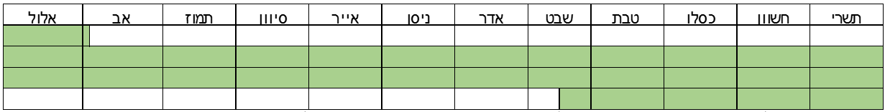
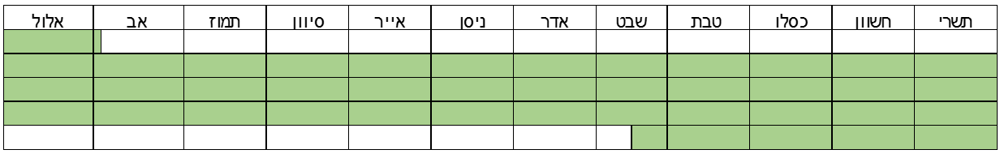

מצווה שלא ליהנות מפירות הערלה, הם הפירות הגדלים בשלוש השנים הראשונות של
העץ, ומצווה להעלות את הפירות הגדלים בשנה הרביעית לירושלים ולאוכלם בקדושה
ובהלל לה', ומתוך כך תימשך ברכה לפירות שיגדלו מהשנה החמישית ואילך. שנאמר
(ויקרא יט, כג-כה): "וְכִי תָבֹאוּ אֶל הָאָרֶץ וּנְטַעְתֶּם כָּל עֵץ מַאֲכָל
וַעֲרַלְתֶּם עָרְלָתוֹ אֶת פִּרְיוֹ, שָׁלֹשׁ שָׁנִים יִהְיֶה לָכֶם עֲרֵלִים
לֹא יֵאָכֵל. וּבַשָּׁנָה הָרְבִיעִת יִהְיֶה כָּל פִּרְיוֹ קֹדֶשׁ הִלּוּלִים
לַה'. וּבַשָּׁנָה הַחֲמִישִׁת תֹּאכְלוּ אֶת פִּרְיוֹ לְהוֹסִיף לָכֶם
תְּבוּאָתוֹ, אֲנִי ה' אֱלוֹהֵיכֶם".
'ערלה' פירושה אטימה, לפיכך ערל לב (יחזקאל מד, ט) הוא מי שליבו אטום, ערל
אוזניים (ירמיהו ו, י) הוא זה שאוזניו אטומות מלשמוע, וערל שפתיים (שמות ו,
יב) הוא אדם ששפתיו אטומות מלדבר. הרי שנצטווינו שפירות שלוש השנים הראשונות
יהיו אטומים לנו, שלא נאכלם ולא נהנה מהם (רש"י ורשב"ם ויקרא שם).
ביום שעברו בני ישראל את הירדן בימי יהושע בן נון ונכנסו לארץ, התחייבו במצוות
ערלה, שנאמר (ויקרא יט, כג): "וְכִי תָבֹאוּ אֶל הָאָרֶץ וּנְטַעְתֶּם". ואף
עץ שגוי נטע בשדהו מאז ואילך חייב בערלה ופירותיו אסורים עלינו בהנאה, שנאמר
(שם): "כָּל עֵץ מַאֲכָל", לרבות עץ שנטע גוי (תורת כהנים שם).
בחוץ לארץ דין ערלה נוהג מ'הלכה למשה מסיני', וקבעה ההלכה שהוא נוהג רק כאשר
יש וודאות שהפירות ערלה, אבל כל שיש ספק בדבר, למרות שמסתבר מאוד שהפירות
ערלה, אין בהם איסור, שספק ערלה בארץ אסור, ובחוץ לארץ מותר (משנה וירושלמי
ערלה ג, ז; בבלי קידושין לט, א; שו"ע רצד, ח, להלן יא). גבולות הארץ לעניין
מצוות ערלה הם גבולות עולי מצרים. וגם לסוברים שדרום הערבה מחוץ לגבול עולי
מצרים, כיוון שהוא תחת שלטון מדינת ישראל, חלה עליו המצווה מהתורה (להלן יב,
ב, 2; יז).
אחד הנוטע גרעין ואחד הנוטע ייחור, מעת שהשרישו באדמה מתחילים למנות להם שלוש
שנים (בהלכה ד יבואר כיצד מחשבים את השנים).
ב - טעם המצווה
טעם המצווה, לכבד את ה' בראשית פירות העץ, לאוכלם בקדושה בירושלים ולהלל בהם
את ה' על כל הטוב שהעניק לנו. וכיוון שבדרך כלל הפירות הגדלים בשלוש השנים
הראשונות אינם מרובים ומשובחים, אין ראוי להלל בהם את ה', ועל כן אסרה אותם
התורה, כדי שתחילת אכילתנו תהיה בקדושה ובהלל לה' בשנה הרביעית שבה כבר גדלים
פירות רבים וטובים. ומתוך כך, נועם ה' וברכתו יחולו על הפירות הגדלים בכל
השנים, ואכילתם תהיה מחוברת לאמונה, ותעניק חיוניות להוסיף טובה וברכה בעולם.
כיוצא בזה צוותה התורה לקדש את בכור האדם ואת בכור הבהמה ואת פירות הביכורים.
וכן הוא טעמן של מצוות חדש, תרומה, חלה וראשית הגז (עי' רמב"ן ויקרא שם; חינוך
רמו-רמז).
עוד למדנו ממצווה זו את ערך האיפוק, שהוא חשוב ומועיל מאוד. היכולת להתאפק
ולדחות את סיפוק הרצון לזמן המתאים הוא תנאי הכרחי להצלחתו של האדם בעולם הזה
ובעולם הבא. לדוגמא, ידוע שאדם שילמד בנעוריו בשקידה, יצליח יותר בחייו
האישיים ובפרנסתו, ואע"פ כן צעירים רבים אינם מצליחים להתאפק, נגררים אחר יצרם
ומאבדים את זמנם בבילויים שונים. כמו כן ידוע שקשרי חברות בין בחורים ובחורות
שלא לשם נישואין, מזיקים ליכולתם להינשא ולהקים באהבה בית נאמן, ואע"פ כן רבים
אינם מצליחים להתאפק, נגררים אחר יצרם לקשרים סוערים שאינם מובילים לברית אמת.
וכן ישנם אנשים שאינם מצליחים להתאפק מלבזבז את כספם על מותרות כקניית דירה
יקרה מכפי יכולתם, ואינם מצליחים לחסוך כסף
כדי לסייע לילדיהם לרכוש מקצוע ולהתחתן וכדי לקיים את עצמם בזקנותם. גם אדם
הראשון נגרר אחר יצרו וחטא מפני שלא התאפק מלאכול מעץ הדעת טוב ורע, וגרם בכך
מיתה לו ולצאצאיו. במצוות הערלה, לומד האדם לראות את פירותיו גדלים, ולהימנע
מליהנות מהם, ותוך כך הוא לומד להתגבר על יצרו ולהתאפק. זהו שאמרו חכמים
(ויק"ר כה, ב): "מי יגלה עפר מעיניך אדם הראשון, שלא יכולת לעמוד על צוויך שעה
אחת, והרי בניך ממתינים לערלה שלוש שנים" (עי' ביצה כה, ב).
עוד אמרו חכמים, שפירות השנים הראשונות מבטאים רצון לצאת אל הפועל לפני הזמן,
בלא האיפוק הראוי, ולכן אין בהם שלימות והטומאה דבוקה בהם. פירות שלוש השנים
הראשונות כנגד שלוש הקליפות הרעות והקשות, שאוטמות ומסתירות את האור. והשנה
הרביעית כנגד הקליפה הדקה שמעורבים בה טוב ורע, ופירותיה נתקנים על ידי העלאתם
לירושלים ואכילתם בקדושה (זוהר ח"ג פז, א; שערי אורה שער ה'; פרדס רימונים שער
כה, ז).
ג - איסור הנאה
הפירות הגדלים בשלוש השנים הראשונות אסורים באכילה ובהנאה. לפיכך, אסור להדליק
נר בשמן של פירות ערלה, ואסור להסיק תנור בפירות ערלה. וכן אסור להניח פירות
ערלה באדמה לשם זיבול, אבל מותר להשליכם על הקרקע בלא כוונת זיבול. גם לצורך
מצווה אסור להשתמש בפירות ערלה, לפיכך, אתרוג של ערלה פסול לארבעה מינים
בסוכות (סוכה לד, ב; שו"ע יו"ד רצד, כד; פנה"ל סוכות ד, יב). וכן אסור ליהנות
מריח של פירות ערלה (שו"ע קח, ז).
וכן אסור לצבוע בגד בצבע שהופק מפירות ערלה. והבגד שנצבע בפירות ערלה אסור
בהנאה, וכדי שלא יכשלו בו, צריך לשורפו (ירושלמי ערלה ג, א; בבלי קידושין נו,
ב). וכל אימת שיש חשש שיבואו ליהנות מפירות ערלה, מצווה לשורפם או לאבדם בדרך
אחרת שתמנע את האפשרות ליהנות מהם. ואם אפשר, טוב להסיר את הפרחים או הפירות
מהעץ בעודם קטנים, כדי שלא יכשלו בהם.
כל מה שצומח עם הפרי אסור בהנאה, ובכלל זה גרעיני הפרי וקליפתו, וכן מיץ היוצא
ממנו. אבל העץ והעלים והפרחים שלו מותרים בהנאה. וכן הפרי בעודו קטן מאוד עד
שאינו נחשב פרי ונקרא סמדר - מותר בהנאה. אבל משיגיע לשלב הבוסר, למרות שעדיין
אינו ראוי לאכילה, הוא כבר נחשב פרי וחל עליו איסור ערלה (משנה ערלה א, ז-ט;
שו"ע רצד, א-ב).
אסור לזרוע גרעיני פירות של ערלה, וכן אסור להניח פרי ערלה באדמה כדי שיצמח
ממנו עץ. אבל מותר לנטוע ענף של עץ ערלה, הואיל ואין איסור הנאה בעץ (משנה
ערלה א, ט). עבר ושתל פרי ערלה, העץ הצומח מותר בהנאה, שכלל נקוט בידינו: "זה
וזה גורם - מותר". כלומר, כאשר יש שני גורמים לצמיחת העץ - הפרי האסור והאדמה
המותרת, העץ הצומח מותר בהנאה (שו"ע רצד, יב).
איסור ערלה חל גם על עץ של גוי, שפירותיו אסורים על ישראל בהנאה. אמנם לגוי
מותר ליהנות מפירות ערלה שצמחו בעץ שלו או בעץ של ישראל, כי איסור ערלה חל על
ישראל ולא על גויים. אבל כיוון שהפירות אסורים על ישראל בהנאה, אסור לישראל
למכור את פירות הערלה שלו לגוי, וכן אסור לו לתת אותם במתנה לגוי או אפילו
להאכילם לחיה, כי גם באופן זה יש לישראל הנאה מהם (רמב"ם הל' מאכלות אסורות ח,
טז).
אמנם לפני שפירות הערלה החלו לצמוח, מותר למכור אותם לגוי, שהואיל והישראל
מקבל את הכסף עוד לפני שהפירות באו לעולם, אין הוא נהנה מהפירות אלא מהעץ,
שאותו הוא מוכר, והעץ מותר בהנאה (שו"ע רצד, טו, נקודות הכסף שם). וזאת בתנאי
שאין חשש שהגוי ימכור את פירות הערלה לישראל ויכשיל אותו באיסור, כגון שהגוי
מוכרם במקום שאין שם יהודים.
ד - חישוב שנות הערלה
במניין שנות הערלה אנו מתחשבים בשני תאריכים, א' בתשרי שהוא ראש השנה לשנים
ולנטיעות, וט"ו בשבט שהוא ראש השנה לאילנות, וזאת משום שכל פרי שיחנוט עד ט"ו
בשבט, בידוע שחנט מכוח הגשמים שהעץ קיבל בשנה הקודמת. עוד כלל יש לנו: שלושים
יום בשנה נחשבים שנה (ר"ה ט, ב - י, ב).
כך הוא החשבון: אם העץ השתרש באדמה עד יום כ"ט אב, הרי שעד א' בתשרי יעברו
עליו שלושים יום, ואותם שלושים יום ייחשבו לו כשנה שלימה. אח"כ יש להמתין עוד
שנתיים עד לסיום שלוש השנים, וכיוון שראש השנה לאילנות הוא ט"ו בשבט, יש
להמתין עד ט"ו בשבט, כי הפירות שחונטים לפני ט"ו בשבט חנטו מכוח גשמי השנה
הקודמת כאשר העץ עוד היה ערלה. הרי שאם העץ השריש ביום כ"ט באב תשפ"א, כל
הפירות שיחנטו בו עד ט"ו בשבט של שנת תשפ"ד יהיו ערלה. וכל שיחנטו בו מט"ו
בשבט תשפ"ד ועד ט"ו בשבט תשפ"ה יהיו נטע רבעי, וכל הפירות שיחנטו בו מט"ו בשבט
תשפ"ה יהיו חולין. הרי שבפועל דין ערלה יחול עליו במשך שנתיים וחמישה וחצי
חודשים.
שיערו חכמים שלאחר ארבעה עשר יום הגרעין או הייחור משתרש באדמה. נמצא שכדי
שהעץ ישתרש באדמה עד יום כ"ט אב וירוויחו שנה, יש לנטוע אותו לכל המאוחר בט"ו
באב. ואם שתלו שתיל עם גוש אדמתו, אין צריך להמתין ארבעה עשר יום, כי מעת
שמניחים אותו באדמה הוא נחשב מושרש בה. וממילא אם יניחו אותו באדמה עד יום כ"ט
באב, ירוויחו שנה.
אבל אם העץ השתרש בקרקע מיום ל' באב תשפ"א ואילך, כיוון שלא היו לו שלושים יום
בשנת תשפ"א, יתחילו לספור לו שנה ראשונה רק בא' תשרי תשפ"ב, ויצטרכו להמתין
שלוש שנים שלימות עד א' תשרי תשפ"ה, וכיוון שראש השנה לאילנות הוא בט"ו בשבט,
יצטרכו להמתין לו עוד מספר חודשים עד ט"ו בשבט תשפ"ה, ורק אז יפקע מהעץ דין
ערלה. הרי שאם העץ הושרש באדמה בל' אב תשפ"א, דין ערלה חל עליו במשך שלוש שנים
וחמישה וחצי חודשים. ואמנם יש מקילים וסוברים שלעולם אין דין ערלה נמשך יותר
משלוש שנים, אולם כיוון שדין ערלה
מהתורה, הלכה כדעת המחמירים.
הערה 5: (ההערה הזו לא מופיעה ככפתור כיון שיש בה תמונות)
השתרש בכ"ט באב - שנות הערלה תסתיימנה כעבור כשנתיים וחצי:

השתרש בל' באב - שנות הערלה תסתיימנה כעבור שלוש וחצי שנים:

כתבתי כדעת רז"ה, תוס', רשב"א, ריטב"א, ר"ן וטור, שלעולם לאחר סיום
שלוש שנות הערלה, צריך להמתין עד ט"ו בשבט, כי הפירות שחונטים עד ט"ו
בשבט יונקים את חיותם מגשמי השנה שעברה. אלא שאין צריך שהשנה הראשונה
תהיה שלימה, ואם היו בה שלושים יום עד א' בתשרי, הם נחשבים שנה אחת.
אמנם לדעת רש"י, רמב"ם וראב"ד (הל' מעשר שני ונטע רבעי ט, י-יב),
רי"ד, מאירי וסמ"ג, רק עץ שהקלנו עליו בתחילתו להחשיב לו מקצת השנה
כשנה, צריך להמתין עד ט"ו בשבט, אבל אילן שניטע פחות משלושים יום לפני
תום השנה, ימתין עד א' תשרי תשפ"ב ואז יתחיל למנות שלוש שנים שלימות,
וביום א' בתשרי תשפ"ה, יפקע ממנו דין ערלה, שהואיל ועברו עליו שלוש
שנים שלימות יצא לגמרי מכלל ערלה, ואף מה שיחנוט לפני ט"ו בשבט, שגדל
מכוח גשמי שנה שעברה כשעוד היה ערלה, אינו נאסר. ואם נטע את העץ בין
א' תשרי לט"ו בשבט, לדעת רבים לפי שיטה זו, שלוש שנות הערלה מסתיימות
בט"ו בשבט, כך שימתין יותר משלוש שנים תמימות (ראב"ד, רדב"ז ודעימיה
בדעת הרמב"ם). ויש אומרים שימנה שלוש שנים מיום ליום (כס"מ בדעת
הרמב"ם). ויש אומרים שבין נטע לפני ר"ה ובין לאחריו, לעולם אין מונים
יותר משלוש שנים מיום ליום (רב האי גאון כמובא באשכול הל' ערלה קיא,
א; ורב נטרונאי גאון כמובא בתמים דעים קל). ויש מקילים עוד, שאם השריש
עד כ"ט באב תשפ"א, שנות הערלה מסתיימות בא' תשרי תשפ"ד, כעבור 25
חודשים מההשרשה. ואם השריש לאחר כ"ט באב, שנות הערלה מסתיימות בט"ו
בשבט תשפ"ד, כעבור 29.5 חודשים מההשרשה (ר' חננאל ר"ה ט, ב - י, א;
י"א באשכול ערלה קיא, א).
למעשה, בדעה העיקרית פסק השו"ע רצד, ד-ה, כרמב"ם, ורק בי"א כתב כרז"ה.
גם הגר"א פסק כרמב"ם. אולם כתבתי כדעת המחמירים, שספק דאורייתא
לחומרא. וכ"כ מהר"א פולדא, לבוש, שערי צדק, אדר"ת. ורש"ס וכרם ציון
ח"ו ה, ה, כתבו שראוי להחמיר. ←
בחו"ל הלכה כדעת המקילים, ובשעת הצורך אף כדעת ר"ח. לעניין ארבעה עשר
יום הדרושים להשרשת הנטיעה, הכוונה לימים שלימים, ולכן כדי שתעלה לו
שנה, עליו לנטוע לכל המאוחר בט"ו באב. וכ"כ רמב"ם (נטע רבעי ט, י),
סמ"ג, כפתור ופרח, טור ושו"ע רצד, ד, שערי צדק וערוה"ש. ויש אומרים
שמקצת היום ככולו, ויכול לנטוע בט"ז באב (רבנו ירוחם ומאירי). ובארץ
ישראל צריך להחמיר, ובחו"ל אפשר להקל.
ה - עץ שנעקר או נקצץ
עץ שנעקר ממקומו, אם נותר לו עדיין שורש אחד שמחבר אותו לאדמה, ועוביו לפחות
כמחט שהאורגים היו מותחים בה את הבגד, אפשר לחזור ולטומנו באדמה והוא פטור
מערלה, הואיל והוא יכול להתקיים בדוחק על ידי שורש זה. ואם לא נותר לו אפילו
שורש כזה, כשיטמנו אותו באדמה יתחייב שוב בערלה (שו"ע רצד, כ).
עץ שעקרתו הרוח או נשטף על ידי נהר, ובצמוד לשורשיו נותר גוש אדמה. למרות שאין
לו שום שורש שמחברו לקרקע, אם העץ יכול לחיות מגוש האדמה שצמוד לשורשיו ארבעה
עשר יום, אפשר לטמון אותו מחדש באדמה ואין צריך לחזור לספור לו שנות ערלה. ואם
אינו יכול לחיות ממנו ארבעה עשר יום, כשיטמנו אותו באדמה יצטרכו לספור לו מחדש
שנות ערלה. לפיכך, כאשר יש צורך להעתיק עץ מאכל ממקום למקום, יש להקפיד לעוקרו
עם גוש אדמה שיוכל לחיות בו ארבעה עשר יום, וכך לא יצטרכו לספור לו שנות ערלה
מתחילה. וטוב לגוזמו לפני כן ככל האפשר, שעל ידי כך הוא מתקיים בקלות זמן רב.
עץ שנקצץ או נשבר, אם נשאר כל שהוא מגזעו מעל הארץ, פטור מערלה, ואם נקצץ כולו
וחזר לגדול משורשו, חייב בערלה.
ו - הַבְרָכָה ודין נצרים
כדי ליצור 'הַבְרָכָה' מכופפים ענף של עץ מפותח וטומנים את אמצעו באדמה וראשו
יוצא במקום שבו רוצים ליצור עץ נוסף. בתחילה עץ ה'הברכה' יונק את חיותו מהעץ
המקורי ובמשך הזמן החלק הטמון באדמה מפתח שורשים ואף הם מזינים את העץ החדש.
לגבי ערלה, כל עוד העץ החדש יונק חיות מהעץ המקורי, גם אם רוב חיותו מהשורשים
שב'הברכה', הוא נגרר אחר העץ המקורי ופטור מערלה. ואף אם הבריכו מהעץ השני עץ
שלישי, ומהשלישי הבריכו עץ רביעי, כל עוד הם מחוברים לעץ הראשון פטורים מערלה,
כי הם נחשבים עדיין כהמשך שלו. אבל אם חתכו את הענף המקשר בין העץ המקורי
ל'הברכה' או שחלק זה התנוון, התחייבה ה'הברכה' בערלה וצריך להתחיל למנות לה
שלוש שנים.
עלו נצרים חדשים (סורים) מתחת לאדמה, למרות שעלו מתוך מערכת השורשים של העץ
הוותיק, כל זמן שאין הדבר ניכר, כגון שיצאו במרחק משמעותי מהעץ, יש להם דין של
עץ חדש שחייב בערלה (ב"מ קיט, א; רמב"ם נטע רבעי י, יט). אמנם אם הנצרים צמחו
בסמיכות לעץ הוותיק עד שניכר שהם חלק ממנו ויצאו מגזעו שמתחת לאדמה, יש מקום
לומר שלהלכה אין להם דין ערלה, הואיל והם חלק מהעץ הוותיק. אולם כיוון שרבים
מחמירים בזה להחשיב גם נצרים אלו כעץ חדש, נכון להחמיר.
ז - עציצים ומשתלות
עץ שגדל בתוך בית חייב בערלה, כי העיקר לגבי חיוב ערלה, שהעץ יהיה נטוע בארץ,
והגג שמעליו אינו פוטרו מערלה. וכן עץ שנטוע על גג בית חייב בערלה, ואף שאוויר
חוצץ בין הגג לקרקע, כיוון שהגג עצמו מחובר על ידי הקירות לארץ, הגג עצמו נחשב
כחלק מהארץ והעץ שעליו נחשב כנטוע בארץ (שו"ע רצד, כו).
הנוטע שתיל בעציץ נקוב, נחשב כנוטע בארץ, ומתחיל למנות שנות ערלה. וכן הנוטע
עץ בעציץ חרס שאינו נקוב, נחשב העץ כנטוע בארץ וחייב בערלה, שהואיל ושורשיו
יכולים לבקוע את החרס, גם לפני שהם בוקעים אותו הם נחשבים כיונקים מהארץ. ויש
אומרים שאפילו עץ שגדל בעציץ של מתכת חייב בערלה, למרות שברור שהשורשים אינם
יכולים לחדור אותו.
בעקבות פיתוח החקלאות בשכלול הדישון וההשקיה, עצים רבים מסוגלים להניב פירות
רבים בשנה השלישית. וכיוון שהפירות אסורים בהנאה, ויש הפסד מכך שהעצים תופסים
אדמה יקרה בחינם, מצאו לכך עצה: לקיים את העצים במשך כשנתיים במשתלות בתוך
עציצי פלסטיק נקובים, שם הם תופשים מקום קטן ועלות החזקתם נמוכה, ובשנה
השלישית מעבירים אותם לאדמה, כדי שיתחזקו בקרקע ויניבו פירות רבים בשנה
הרביעית שפירותיה מותרים.
למעשה, כיוון שחוששים לדעת הסוברים שעציץ שאינו נקוב מפלסטיק פטור מערלה, כדי
שזמן שהיית הנטיעות בעציצים יחשב לשלוש שנות הערלה לכל הדעות, צריך להקפיד על
שני דברים: א' שיהיה בעציץ נקב כשיעור שורש קטן שעל ידו הוא יחשב כמחובר
לאדמה, ונהגו להחמיר שיהיה הנקב בקוטר 2.5 ס"מ.
ב' בעת שמעבירים את השתיל מהעציץ לאדמה, צריך שהגוש שסביב השורשים לא יתפרק.
בדיעבד גם אם רובו התפרק, כל זמן שיש לשורשיו גוש אדמה שהם מושרשים בו, הוא
יכול עדיין להתקיים על ידו, ואין צריך לחזור לספור לו שלוש שנים. אבל אם כמעט
כל הגוש התפרק, עד שיש לחוש שבלא הנחתו באדמה, גם על ידי השקיית הגוש וטיפוחו,
לא יוכל להתקיים 14 יום, יש למנות לו שלוש שנים לערלה מתחילה.
ח - הגדרת העצים החייבים בערלה
מצוות ערלה חלה על עצי פרי ולא על ירקות, וגם ירקות שגדלים על שיחים רב שנתיים
פטורים מערלה. ההבדל העיקרי בין עץ לירק רב-שנתי, שגזעו של ירק רב שנתי נובל
בכל שנה וחוזר לצמוח בשנה הבאה משורשיו, ואילו גזעו של העץ עם שורשיו נשאר
ומתעצם משנה לשנה, וממנו ממשיכים לצמוח בכל שנה ענפים ופירות. לפי זה גם
קובעים את הברכה על אכילת הפרי, 'עץ' או 'אדמה'. לכן מברכים על בננה 'אדמה',
ואף שהיא גדלה לגובה של כארבעה מטרים ונראית כמו עץ, כיוון שבכל שנה גזעה נובל
ושורשיה קמלים והיא חוזרת וצומחת מהפקעת שלה, היא נחשבת כירק (ברכות מ, א;
כגאונים; שו"ע ורמ"א או"ח רג, ב-ג; פנה"ל ברכות ח, ב).
לגבי חצילים ופלפלים התעוררה שאלה, שכן הגזע שלהם נשאר משנה לשנה. אולם למעשה
אין בהם דין ערלה, כי הם שונים לגמרי מעץ, שהם נותנים פרי כבר בשנה הראשונה,
ובשנה השנייה פירותיהם פוחתים בכמותם ובאיכותם, והם אינם נותנים פירות יותר
משלוש שנים. וכפי שלמדנו בתורה, עץ נותן פירות לפחות חמש שנים, ובזכות שמירת
מצוות ערלה פירותיו מתרבים ומשתבחים בשנה החמישית, שנאמר (ויקרא יט, כג-כה):
"וְכִי תָבֹאוּ אֶל הָאָרֶץ וּנְטַעְתֶּם כָּל עֵץ מַאֲכָל וַעֲרַלְתֶּם
עָרְלָתוֹ אֶת פִּרְיוֹ שָׁלֹשׁ שָׁנִים יִהְיֶה לָכֶם עֲרֵלִים לֹא יֵאָכֵל.
וּבַשָּׁנָה הָרְבִיעִת יִהְיֶה כָּל פִּרְיוֹ קֹדֶשׁ הִלּוּלִים לַה'.
וּבַשָּׁנָה הַחֲמִישִׁת תֹּאכְלוּ אֶת פִּרְיוֹ לְהוֹסִיף
לָכֶם תְּבוּאָתוֹ אֲנִי ה' אֱלוֹהֵיכֶם". וכפי שאמרו חכמים: "המצווה הזו
שתשמרו, תהיה להוסיף לכם תבואתו, שבשכרה אני מברך לכם פירות הנטיעה. היה רבי
עקיבא אומר: דיברה תורה כנגד יצר הרע, שלא יאמר אדם, הרי ארבע שנים אני מצטער
בו חינם, לפיכך נאמר: לְהוֹסִיף לָכֶם תְּבוּאָתוֹ אֲנִי ה', אני ה' המבטיח על
כך ונאמן לשמור הבטחתי" (רש"י עפ"י תורת כהנים שם). וכן מבאר הרמב"ן (שם),
שהפירות הגדלים בשנה השלישית מעטים ורעים, ורק בשנה הרביעית הם נעשים טובים
וראוי להביאם לפני ה' כמצוות נטע רבעי.
על פי זה, גם אין דין ערלה בפירות פפאיה ופסיפלורה, הואיל והם נותנים פרי כבר
בשנה הראשונה, ועד השנה החמישית פירותיהם מתמעטים, ורבים מהם גם אינם מחזיקים
מעמד חמש שנים. אמנם יש מחמירים בזה, אבל העיקר כדעת המתירים. וכן אין דין
ערלה בפטל ואַסְנָה על כל סוגיהם, כמבואר בהערה.
ט - הנוטע שלא לשם פירות
הנוטע עץ מאכל שלא לצורך פירותיו אלא לצורך קורותיו או כדי שישמש גדר, אין על
הפירות הגדלים בו דין ערלה, הואיל ואינו נחשב עץ מאכל, ואילו מצוות ערלה חלה
רק על עץ מאכל, שנאמר (ויקרא יט, כג): "וּנְטַעְתֶּם כָּל עֵץ מַאֲכָל -
וַעֲרַלְתֶּם עָרְלָתוֹ אֶת פִּרְיוֹ". אמנם אמרו חכמים, שאפשר להקל בכך בתנאי
שניכר שהאילן נטוע שם שלא לצורך אכילת פירותיו, כגון שהאילנות צפופים מאוד כך
שניכר שניטעו כדי להשתמש בעציהם לשריפה. או שגוזמים את ענפיו באופן שגורם להם
להתעבות עד שניכר שהעץ ניטע כדי להשתמש בענפיו כקרשים לבניין. או שלפי מיקום
נטיעתם המדויק של העצים ניכר שהם ניטעו כדי לשמש גדר לחצר. ואף אם חשב שרק
צידו האחד של האילן ישמש לגדר ואילו צידו השני יהיה לצורך גידול פירות, הצד של
הגדר פטור מערלה והצד של הפירות חייב בערלה (משנה וירושלמי ערלה א, א; שו"ע
רצד, כג). ואם ירצה לאכול את הפירות המותרים, יפריש מהם תרומות ומעשרות בלא
ברכה (עי' ירושלמי ערלה א, א). ואם נטע את העץ גם לגדר או קורות וגם לפירות,
יש לפירותיו דין ערלה.
הנוטעים עצים לשם נוי כדוגמת זיתים, אין על פירותיהם דין ערלה. אולם התעורר
ספק לגבי עצים שניטעו לשם נוי, אבל מעוניינים גם בנוי הפירות שלהם, כדוגמת
רימונים ותמרים. וכיוון שדין ערלה מהתורה, יש להחמיר בספק. ורק כאשר ברור שלא
התכוונו לנוי הפירות, אין עליהם דין ערלה.
י - נטע רבעי
הפירות הצומחים על העצים בשנה הרביעית קדושים, ומצווה לאוכלם בטהרה בירושלים,
כדין מעשר שני (להלן ז, ט-י). אם רצה, יכול בעל הפירות לפדות את הפירות בכסף,
ולהעלות את הכסף לירושלים ולקנות בו מאכלים ולאכלם בטהרה. כיוון שפירות נטע
רבעי קדושים, אין מצווה לשייר מהם לקט שכחה ופאה לעניים, ואין מצווה להפריש
מהם תרומות ומעשרות (משנה וירושלמי מעשר שני ה, ג-ד; רמב"ם נטע רבעי ט, א-ד).
בזמן הזה שאיננו יכולים להעלות את פירות השנה הרביעית ולאוכלם בטהרה בירושלים,
פודים את כל הפירות בכסף או בשווה כסף, ובכך מתירים את הפירות באכילה. ואף שהם
פירות מרובים, כיוון שאסור לנו לאוכלם בזמן הזה, אין להם שום שווי, אלא שאי
אפשר לבצע פעולת פדיון בפחות משווה פרוטה, לכן פודים את כל הפירות על מטבע
ששווה לפחות פרוטה או על מאכל ששווה פרוטה. לפני הפדיון מברכים: "ברוך אתה ה'
אלוהינו מלך העולם אשר קדשנו במצוותיו וצוונו על פדיון רבעי", ואומרים: "כל
הפירות הללו פדויים בפרוטה זו", או "במאכל זה ששווה פרוטה". ואת הפרוטה או
המאכל שהתקדשו בפדיון - מאבדים, כדי שלא יכשלו ויהנו בהם (רמב"ם מאכלות אסורות
י, טז-יז). כל פרטי דינים אלו יבוארו להלן בהלכות פדיון מעשר שני (להלן י,
ו-ח).
גם על פירות השמיטה חלים דיני ערלה ונטע רבעי, שאם הפירות בשלוש השנים
הראשונות של העץ - הם ערלה ואסורים באכילה, ואם הם בשנה הרביעית - מותר לכל
לקוטפם, אבל צריך לאוכלם בירושלים, ובזמן הזה צריך לחלל אותם על פרוטה. בעלי
השדות צריכים לסמן את העצים בשמיטה, כדי שהבאים לשדה יזהרו בהם כשהם ערלה,
וידעו לפדותם כשהם נטע רבעי. לאחר פדיונם יש להקפיד לסיים את אכילתם עד עונת
הביעור, ואם לא עשה כן, צריך לבערם כדרך שצריך לבער את שאר פירות השביעית
(רמב"ם נטע רבעי ט, ז; פנה"ל שביעית ד, ה).
נחלקו הפוסקים לגבי 'נטע רבעי' בחוץ לארץ. יש אומרים שהואיל והלכה למשה מסיני
שמצוות ערלה נוהגת בחוץ לארץ, גם מצוות נטע רבעי נוהגת בחוץ לארץ, שהערלה ונטע
רבעי תלויים זה בזה (תר"י, ר"י הזקן). ויש אומרים, שדין נטע רבעי כדין מעשר
שני שנוהג רק בארץ ישראל (רמב"ם). לכתחילה טוב לצאת ידי כולם, ולפדות נטע רבעי
שבחוץ לארץ בלא ברכה (ש"ך רצ"ד יז). והרוצה להקל שלא לפדות - רשאי, שכשם שבספק
ערלה מקילים בחוץ לארץ, כך הלכה כמקילים בספק נטע רבעי.
יא - ספקות בערלה
פירות ערלה שהתערבו בפירות רגילים מאותו סוג, כל זמן שאין הפירות הכשרים פי
מאתיים מהערלה, כל התערובת אסורה. שכך קבעו חכמים, שתרומה, שאסורה באכילה
ומותרת בהנאה - בטלה במאה, ואילו ערלה וכלאיים שאסורים באכילה ובהנאה - בטלים
במאתיים (משנה ערלה ב, א).
וכל זה כאשר פירות הערלה התערבו בתוך פירות ההיתר, אבל אם התעורר ספק לגבי
פירות מסוימים שאדם קנה, אם הם ערלה או לא, הדין תלוי בשאלה היכן התעורר הספק.
אם הפירות נקנו במטע או סמוך למטע, למרות שרוב המטעים והעצים אינם ערלה, כיוון
שיש לעץ או למטע מקום קבוע, פירות הערלה אינם בטלים, כפי הכלל: "כל קבוע כמחצה
על מחצה דמי (נחשב)", והפירות אסורים. אבל אם הפירות נקנו לאחר שהופרשו ממקומם
הקבוע והובאו לשוק או לחנויות, הרי שמדובר בספק רגיל, והולכים אחר הרוב, כפי
הכלל: "כל דפריש מרובא פריש" (כל הפורש נחשב כפורש מהרוב).
אמנם כל זה בדיעבד, לגבי אדם שקנה פירות ואינו יודע מה דינם, או שהוא נמצא
במקום שאין שם חנויות עם תעודת כשרות וכדי להגיע לחנות שכזו עליו לטרוח טרחה
רבה. אבל אם יש שם חנות עם תעודת כשרות, עליו לצאת מהספק ולקנות בה. וגם אם
הוא יודע שמדובר בספק רחוק מאוד, מפני שאחוז הערלה בפירות אלו או באזור זה
נמוך ביותר, כשאפשר חובה לצאת מהספק. בנוסף לכך, מצווה לחזק את המדקדקים
בכשרות. ועוד, שכאשר יש תעודת כשרות גם מפרישים תרומות ומעשרות כדין.
[1]
. משנה ערלה א, ב: "עת שבאו אבותינו לארץ - מצאו נטוע פטור, נטעו אף
על פי שלא כבשו חייב". שנאמר 'וְכִי תָבֹאוּ' - מיד שתבואו (ירושלמי
שם). וכן נפסק ברמב"ם (מעשר שני ונטע רבעי י, ט).
יש אחרונים שסוברים שלדעת הסוברים שקדושה שנייה שנתקדשה הארץ בימי בית
המקדש השני בטלה עם חורבנו, ערלה בזמן הזה מדברי חכמים (משנה למלך
מאכלות אסורות י, יא). ויש אומרים שרק כאשר רוב ישראל יושבים בארץ,
חייבים בערלה מהתורה, שנאמר "כי תבואו" (צל"ח ברכות לו, א). למעשה
נפסק שגם בזמן הזה מצוות ערלה בארץ מהתורה (שו"ע יו"ד רצד, ח; רדב"ז,
מבי"ט, מהרשד"ם, מהרי"ט). אמנם בשעת הדחק מצרפים את דעת המקילים כצד
להיתר (הרב הרצוג פסקים וכתבים ג, א; יבי"א ו, יו"ד כד).
כיוון שספק ערלה בחוץ לארץ מותר, אמרו חכמים (ברכות לו, ב): "כל המיקל
בארץ הלכה כמותו בחוץ לארץ", ולכן אין לקליפה של צלף דין ערלה. וכן
הדין לגבי כל מחלוקת בערלה, שכל שיש תנא או אמורא שמיקל, בחו"ל הלכה
כמותו (עי' שו"ע רצד, יז). ונראה שגם במחלוקות ראשונים ואחרונים יש
לנטות לצד המקלים, אבל כאשר מסתבר מאוד כדעת המחמירים, נכון להחמיר.
[2]
. בירושלמי ערלה ג, א, ובבלי פסחים כא, ב: לדעת חזקיה כל מקום שנאמר
לֹא יֵאָכֵל כדוגמת ערלה, אסור גם בהנאה, שאם יתירו ליהנות מהפירות,
יוכלו למוכרם ולקנות בדמיהם מאכלים, נמצא שעל ידם מגיעים לאכילה.
וכאשר האיסור נאמר בלשון לֹא תֹאכֵלוּ, כדוגמת איסור אכילת נבלה
וטריפה, המאכל אסור באכילה ומותר בהנאה. וכ"כ רא"ש (חולין ז, יז).
ולדעת ר' אבהו כל לשון איסור אכילה כולל גם הנאה זולת מקומות שיש בהם
לימוד אחר שמתיר בהנאה. וכ"כ רמב"ם (מאכלות אסורות ח, טו). עוד למדו
מכך שנאמר שלוש פעמים לשון 'ערלה', שבכלל זה גם כל סוגי ההנאה (פסחים
כב, ב). (על ההיתר לזרוק לארץ שלא לכוונת זיבול עי' תוס' ע"ז מג, ב,
'אמרו לו', ומשפטי ארץ י, ט).
[3]
. במשנה תמורה לג, ב: "ואלו הן הנשרפין: חמץ בפסח - ישרף, ותרומה
טמאה, והערלה, וכלאי הכרם - את שדרכן לשרוף - ישרוף, ואת שדרכן להיקבר
- יקבור". לתוס' משמע שחובה לשרוף כלאי הכרם וערלה, שנאמר (דברים כב,
ט): "פֶּן תִּקְדַּשׁ - פן תוקד אש" (קידושין נו, ב). מנגד, לריטב"א
אין חובה לשרוף, אלא שהם עומדים לשריפה. וביאר בשו"ת בניין ציון קא,
כדי שלא יכשלו וייהנו מהם, ולכן את הראוי לקבורה קוברים, הרי שאין
חובה דווקא לשרוף. וכ"כ בערוה"ש רצד, ג. והחת"ס או"ח קפ, כתב שאם
ישרוף יקיים מצווה, אבל אין בכך חובה, ולכן לא מצינו שרבותינו הקפידו
על כך.
[4]
. שלושה שלבים בגידול הפרי: א' סמדר - עדיין לא נחשב פרי, והוא מעת
שהפרח נופל ומתגלה הפרי הקטנטן ועד הגעתו לשלב שניכרת צורתו כפרי. ב'
בוסר, פרי שאינו ראוי לאכילה. היינו מעת שניכרת צורתו הוא נחשב פרי
למרות שאינו ראוי לאכילה. ג' 'הביא שליש', היינו משעה שהפרי נעשה ראוי
לאכילה בשעת הדחק, ומאז הוא חייב במעשרות. לר' יוסי כבר משלב הסמדר חל
איסור ערלה, ולחכמים, רק משלב הבוסר (משנה ערלה א, ז, תפארת ישראל
שם). וכן מובא בברכות לו, ב, ומבואר שם עפ"י משנה (שביעית ד, י),
שלדעת בית הלל אסור בשביעית לקצוץ ענפי גפן, זית וחרוב מעת שיש עליהם
פירות בוסר, והוא בענבים משיגרעו, זיתים משינצו, וחרובים משישרשרו.
וכן ביאר רדב"ז (שו"ת א, מד) בדעת רמב"ם (נטע רבעי ט, יג). וכ"כ הגר"א
רצד, לז. ואמנם בכפניות של תמרים אסרו גם סמדר, אולם זה משום שהיו
אוכלים אותם (רדב"ז). ואמנם בברכות לו, ב, אמרו שבשאר הפירות חכמים
מודים לר' יוסי שגם סמדר אסור, ועפ"י זה כתב חזו"א (ערלה ג, ה) שאכן
בשאר הפירות סמדר אסור, ורק בענבים, זיתים וחרובים סמדר מותר ובוסר
אסור. אולם הגר"א ביאר שדברי הגמרא בברכות נאמרו כדרך דחייה אבל
המסקנה שבכל הפירות סמדר מותר ובוסר אסור. וכן הלכה, שלא מסתבר לחלק
בין סוגי הפירות השונים.
[למעיינים: בשו"ע רצד, ד, כתב שבסוף השנה השלישית, הפירות שחנטו אחר
ט"ו בשבט מותרים. ולכך נטה מרן הרב במשפט כהן ג. כידוע לדעת רמב"ם
ושו"ע ורוה"פ שלב החנטה הוא השלב שבו הפרי הביא שליש, וראוי לאכילה
בשעת הדחק והתחייב במעשרות (פנה"ל שביעית ג, 6). אלא שקשה על השו"ע,
שכאן למדנו שפירות הבוסר אסורים בערלה ואיך יתכן שכאשר יגיע עליהם ט"ו
בשבט יהפכו למותרים. ואכן לשון רמב"ם (נטע רבעי ט, י): "כל מה שיוציא
האילן בתוך זמן זה הרי הוא ערלה", ומשמע שכוונתו משיוציא - משיגיע
לשלב הבוסר. ולדעת תוס' חנטה היא מעת הסמדר, ואפשר שרש"י שכתב (ר"ה
יד, א) שהולכים אחר החנטה בשנות הערלה, התכוון כדעת תוס'. וכ"כ במשפטי
ארץ ב, ב, שהולכים אחר החנטה לפי תוס'. אולם אפשר לבאר שלדעת שו"ע,
מיום א' תשרי ועד ט"ו בשבט של השנה האחרונה, איסור ערלה הוא רק מפני
שהפירות גדלו מכוח גשמי השנה שעברה, ומסתבר שרק פירות שחנטו לפני ט"ו
בשבט, גדלו על גשמי שנה שעברה, אבל אלו שהגיעו לבוסר בלבד, כבר גדלו
על גשמי השנה החדשה ואין בהם איסור. ואפשר שגם הרמב"ם שלא פירש את
דעתו מסכים לזה.]
[5]
השתרש בכ"ט באב - שנות הערלה תסתיימנה כעבור כשנתיים וחצי:
השתרש בל' באב - שנות הערלה תסתיימנה כעבור שלוש וחצי שנים:
כתבתי כדעת רז"ה, תוס', רשב"א, ריטב"א, ר"ן וטור, שלעולם לאחר סיום
שלוש שנות הערלה, צריך להמתין עד ט"ו בשבט, כי הפירות שחונטים עד ט"ו
בשבט יונקים את חיותם מגשמי השנה שעברה. אלא שאין צריך שהשנה הראשונה
תהיה שלימה, ואם היו בה שלושים יום עד א' בתשרי, הם נחשבים שנה אחת.
אמנם לדעת רש"י, רמב"ם וראב"ד (הל' מעשר שני ונטע רבעי ט, י-יב),
רי"ד, מאירי וסמ"ג, רק עץ שהקלנו עליו בתחילתו להחשיב לו מקצת השנה
כשנה, צריך להמתין עד ט"ו בשבט, אבל אילן שניטע פחות משלושים יום לפני
תום השנה, ימתין עד א' תשרי תשפ"ב ואז יתחיל למנות שלוש שנים שלימות,
וביום א' בתשרי תשפ"ה, יפקע ממנו דין ערלה, שהואיל ועברו עליו שלוש
שנים שלימות יצא לגמרי מכלל ערלה, ואף מה שיחנוט לפני ט"ו בשבט, שגדל
מכוח גשמי שנה שעברה כשעוד היה ערלה, אינו נאסר. ואם נטע את העץ בין
א' תשרי לט"ו בשבט, לדעת רבים לפי שיטה זו, שלוש שנות הערלה מסתיימות
בט"ו בשבט, כך שימתין יותר משלוש שנים תמימות (ראב"ד, רדב"ז ודעימיה
בדעת הרמב"ם). ויש אומרים שימנה שלוש שנים מיום ליום (כס"מ בדעת
הרמב"ם). ויש אומרים שבין נטע לפני ר"ה ובין לאחריו, לעולם אין מונים
יותר משלוש שנים מיום ליום (רב האי גאון כמובא באשכול הל' ערלה קיא,
א; ורב נטרונאי גאון כמובא בתמים דעים קל). ויש מקילים עוד, שאם השריש
עד כ"ט באב תשפ"א, שנות הערלה מסתיימות בא' תשרי תשפ"ד, כעבור 25
חודשים מההשרשה. ואם השריש לאחר כ"ט באב, שנות הערלה מסתיימות בט"ו
בשבט תשפ"ד, כעבור 29.5 חודשים מההשרשה (ר' חננאל ר"ה ט, ב - י, א;
י"א באשכול ערלה קיא, א).
למעשה, בדעה העיקרית פסק השו"ע רצד, ד-ה, כרמב"ם, ורק בי"א כתב כרז"ה.
גם הגר"א פסק כרמב"ם. אולם כתבתי כדעת המחמירים, שספק דאורייתא
לחומרא. וכ"כ מהר"א פולדא, לבוש, שערי צדק, אדר"ת. ורש"ס וכרם ציון
ח"ו ה, ה, כתבו שראוי להחמיר. ←
בחו"ל הלכה כדעת המקילים, ובשעת הצורך אף כדעת ר"ח. לעניין ארבעה עשר
יום הדרושים להשרשת הנטיעה, הכוונה לימים שלימים, ולכן כדי שתעלה לו
שנה, עליו לנטוע לכל המאוחר בט"ו באב. וכ"כ רמב"ם (נטע רבעי ט, י),
סמ"ג, כפתור ופרח, טור ושו"ע רצד, ד, שערי צדק וערוה"ש. ויש אומרים
שמקצת היום ככולו, ויכול לנטוע בט"ז באב (רבנו ירוחם ומאירי). ובארץ
ישראל צריך להחמיר, ובחו"ל אפשר להקל.
[6]
. משנה ערלה א, ג: "אילן שנעקר והסלע (אדמה) עמו... אם יכול לחיות -
פטור, ואם לאו - חייב". וכ"כ בשו"ע רצד, יט. יש אומרים שרק אם יכול
לחיות בגושו שלוש שנים, הוא פטור מערלה. וכ"כ פרח מטה אהרן ב, עה;
ברכ"י רצד, יא; פת"ש יג; אג"מ יו"ד א, קפה. אולם רבני הארץ ובראשם מרן
הרב קוק במשפט כהן ח-ט, פסקו לחקלאים למעשה שדי בכך שהעץ יוכל להתקיים
ארבעה עשר יום, כמשך ימי השרשה. והרב הרצוג פסקים וכתבים ג, ט, קיבל
את דעתם. וכן פסקו משפטי עוזיאל א, כ; ומנחת שלמה א, סט. והכוונה שהעץ
יוכל להתקיים בגושו על ידי שיעניקו לו את הטיפול הדרוש בהשקיה וזיבול.
ונלענ"ד שגם המחמירים יכולים להסכים לכך, שכן אם הגוש מסוגל לקיים את
הצמח על ידי טיפול שגרתי ארבעה עשר יום, מן הסתם יוכל לקיימו גם שלוש
שנים, ובמיוחד אם יגזמו אותו גיזום עמוק וישקו אותו ברציפות בטפטפות.
[7]
. מבואר בירושלמי שביעית א, ו, שלדעת ר' אליעזר בן יעקב, כל שנקצץ
פחות מטפח חייב בערלה, ולחכמים אם נותר כלשהו מעל הקרקע פטור מערלה,
ורק אם נקצץ לגמרי חייב בערלה. לדעת רמב"ם (נטע רבעי י, יג), רשב"א,
רבנו ירוחם, ושו"ע רצד, יח, הלכה כחכמים. והרא"ש פסק כר' אליעזר בן
יעקב. ועי' בב"י וש"ך רצד, לא, ביסוד מחלוקתם. למעשה הלכה כמקילים,
הואיל ומבואר בירושלמי שיסוד חיוב עץ שנקצץ בערלה מדברי חכמים משום
מראית עין, וספק דרבנן לקולא. ועוד שכך דעת רוה"פ.
[8]
. הרבנות הראשית וגופי הכשרות השונים רגילים להורות שנצרים שיצאו מתחת
לאדמה (סורים) דינם כדין עץ חדש וחייבים בערלה, וכמבואר ב"מ קיט, א;
רמב"ם נטע רבעי י, יט: "אילן היוצא מן הגזע - פטור מן הערלה, מן
השרשים - חייב בערלה". וכן מורים גם כאשר נצרים אלו סמוכים וצמודים
לגזע הראשי. לפי זה יש להיזהר בעצי רימון, אוכמניות והדומים להם,
שרגילים להוציא נצרים שמגדלים פירות רבים לפני שיעברו עליהם שנות
ערלה. בפועל מדובר במאבק מתמיד כנגד הנצרים הללו, ורבים נכשלים בזה.
אולם נראה שמעיקר הדין אין בנצרים הסמוכים לעצים הוותיקים איסור. שכן
העץ הוא מערכת שורשיו ותחילת גזעו, וכל זמן שמתוך מערכת זו צומחים
ענפים נוספים אין בהם איסור ערלה, וכפי שלמדנו לגבי צלף, שלעיתים נובל
כולו בחורף וצומח משורשיו, ודינו כעץ שלאחר שלוש שנים פטור מערלה
(כמבואר בשיבולי הלקט ק"ס בשם רבינו חננאל, ועי' להלן הערה 11). נמצא
אם כן שכל מה שמבואר ברמב"ם ובפוסקים לאיסור הוא בנצרים שיוצאים רחוק
מהגזע ועולים מהשורשים הצדדיים ולא ממרכז הצמיחה של העץ. וכעין זה כתב
מו"ר הרב ישראלי (עמוד הימיני כח), ומנחת שלמה (ח"א עא, ח). וכן משמע
לפי מה שכתב הרשב"א שכל איסור נצרים הוא מדברי חכמים משום מראית העין,
וכ"כ הר"ש משאנץ וקרן אורה. ובנצרים הסמוכים לגזע אין חשש מראית עין
כי ניכר שהם חלק מהעץ הראשי. ואם לא כן, קשה מאוד מדוע רבים לא הזכירו
כלל את דין הרמב"ם וביניהם טור ושו"ע, ואף אלו שהזכירו את דברי
הרמב"ם, לא פירטו כראוי איסור חמור ושכיח זה שרבים ממגדלי הרימונים
נכשלים בו. אלא שמוכרחים לומר שאין בזה איסור. בנוסף לכך, לדעת אור
זרוע על פי גרסתו בגמרא (ב"מ קיט, א), כל הנצרים שיוצאים מהשורשים
פטורים מערלה (וכדין הברכה), ובדין דרבנן אפשר שיש לסמוך עליו. אמנם
כיוון שרבים נוהגים להורות כיום שנצרים אלו אסורים, ויש שאף חוששים
שהאיסור מדאורייתא נכון לחוש לשיטתם (משפטי ארץ ו, ד, ועיין במאמרו של
הרב יואל פרידמן אמונת עתיך 14).
[9]
. לדעת רא"ש (תשובות כלל ב, ד), וטור (כמבואר בחוות בנימין ב, ד;
ומנחת שלמה א, ע, עמ' ת), רק הגדל בעציץ חרס שאינו נקוב חייב בערלה,
והגדל בשאר עציצים שאינם נקובים, ובכללם בעציץ עץ, פטור מערלה, וממילא
כאשר יעבירו את השתיל לארץ יצטרכו להתחיל לספור לו שלוש שנים. אולם
הרמב"ם (נטע רבעי י, ח) כתב: "הנוטע בעציץ שאינו נקוב - חייב בערלה,
אף על פי שאינו כארץ לזרעים הרי הוא כארץ לאילנות". וכ"כ בשו"ע רצד,
כו. וכך דעת רוה"פ. אלא שנחלקו באילו עציצים מדובר. יש אומרים דווקא
עציץ עץ וכיוצא בו, שבמקרים מסוימים שורשי העץ יכולים לבקוע אותו, אבל
עציצים שאין השורשים יכולים לבקוע, פטורים לגמרי מערלה (הרב הרצוג
פסקים וכתבים ח"ג י). ויש אומרים, שבכל עציץ שהוא, אפילו מברזל, העצים
חייבים בערלה, מפני ששורשי האילן נחשבים גדולים וחזקים עד ששום מחיצה
אינה נחשבת כמפסקת את יניקתם מהארץ (מנח"ש ח"ג קנח, כ). ויש שהסתפקו
בזה (הר צבי זרעים ח"ב טו, ג; להורות נתן ו, קא). וכיוון שהספק באיסור
תורה, יש להחמיר בעציץ ברזל ועץ שאינם נקובים, שמצד אחד השתיל שבהם
חייב בערלה, ומאידך, אם העבירו אותו אח"כ לאדמה, מתחילים למנות שלוש
שנים מחדש.
[10]
. בדרך כלל מגדלים את הנטיעות בשקית פלסטיק שיש בה נקב, אבל אם היא
עבה ואין בה נקב כלשהו, שורשי עץ קטן לא יבקעו דרכה. ואזי לדעת רא"ש
העץ הגדל שם פטור מערלה ואין מתחילים לספור לו שלוש שנים, ויש סוברים
שכך הדין גם לרמב"ם ודעימיה, כפי שלמדנו בהערה הקודמת. לפיכך יש לעשות
נקב בשקית, שעל ידי כך תחשב הנטיעה מחוברת לאדמה ותתחייב בערלה,
וממילא יתחילו לספור לה את שלוש השנים. שיעור הנקב למדנו מדינים אחרים
שהוא כשיעור שורש קטן (עוקצין ב, י), ובגמרא (שבת צה, ב), למדנו שהוא
גדול מנקב של כונס משקה (שהוא פחות מ-2 מ"מ), וקטן מרוחב זית (שהוא
כ-1.5 ס"מ בזית רגיל שלנו). בפועל נהגו להחמיר בזה מאוד ולהצמיד שיעור
שורש קטן לשיעור כזית שהוא גדול מהזית שלנו, וכך יצא שמצריכים שיעור
נקב של 2.5 ס"מ (הרב גורן תחומין א, עמ' 158; משפטי ארץ ג, ז, 1).
אמנם בדיעבד נלענ"ד שגם בנקב של סנטימטר אחד אפשר להסתפק, הואיל והוא
יותר משיעור שורש קטן. בנוסף לכך לדעת רמב"ם גם עציץ שאינו נקוב חייב
בערלה. ואף שיש סוברים בדעתו שבעציץ עץ שהשורשים אינם מסוגלים לבקוע -
פטור. אולם את שקית הפלסטיק יתכן שהם בוקעים, ואזי לרוה"פ יצא שאין
צורך כלל בנקב (וכ"כ הרב גורן שם). יתר על כן, גם כאשר יש שם נקב קטן
של מילימטר, כיוון שמדובר בשקית, הרי שהשורש שיעבור שם מסוגל להרחיב
אותו ליותר משיעור כזית, וממילא מסתבר שדינו כדין עציץ חרס שאפילו
לרא"ש נחשב כנקוב. בנוסף לכך, יש סוברים שגם עץ הגדל בעציץ שאינו נקוב
כלל ופטור מערלה, סופרים לו שלוש שנים, וכשם שסופרים שנים לנטיעה
שהובאה מחו"ל (בית דוד ח"ב א; אבן האזל כמובא בכרם ציון). ועי' במאמרו
הרחב של ידידי הרב עזריאל אריאל שליט"א בהתורה והארץ ח"א.
[11]
. בעת שמסיעים את השתילים מהמשתלה לשדה, הם נמצאים במשאית שיש לה רצפת
מתכת, והיו שחששו שמא הם נחשבים באותו זמן כתלושים מהקרקע, וכשישתלו
אותם שוב באדמה, יהיה צריך למנות להם שוב שלוש שנים, ולכן הצריכו
לכתחילה להעבירם במשאית שקרקעיתה תהיה נקובה (הגרע"י, שבט הלוי ה,
קנו, ג-ד). אולם מצד הדין אין בזה צורך, הואיל והשתיל נותר עם גושו
באופן שהוא מתקיים על ידו בלא שום שינוי, ולאחר הפסק של כמה שעות אינו
נחשב כנוטעו מחדש (הרב ישראלי בחוות בנימין א, א; מנח"ש ח"ג קנח, יט;
א, ע, משפטי ארץ ג, ט, 7). וזאת בנוסף לסוברים בדעת רמב"ם ורוה"פ, שאף
שתיל שבעציץ מתכת חייב בערלה, ובנוסף לדעת הבית דוד שנזכרה בסוף ההערה
הקודמת. ועי' במאמר הנ"ל של הרב עזריאל.
[12]
. תוספתא כלאים (ג, טו): "זה הכלל כל המוציא עליו מעיקרו הרי זה ירק,
וכל שאין מוציא עליו מעיקרו הרי זה אילן". היינו ירק מוציא כל שנה את
עליו מעיקרו הוא שורשו או הפקעת שלו, ואילו לעץ יש גזע ושורשים
שהולכים ומתעצמים משנה לשנה, ומהגזע יוצאים העלים בכל שנה. ולעניין
ברכת 'האדמה' או העץ אמרו בברכות מ, ב: "היכא דכי שקלת ליה לפירי
ליתיה לגווזא דהדר מפיק (כאשר קוטפים ממנו פירות אין גווזא שאח"כ חוזר
להוציא פירות) - לא מברכינן עליה בורא פרי העץ אלא בורא פרי האדמה".
יש שפירשו שנחלקו הראשונים בהגדרת 'גווזא' וממילא בהגדרת עץ. ולפירושם
לדעת הרא"ש עץ הוא כל ששורשיו נשארים משנה לשנה, ולגאונים רק אם הגזע
שמעל האדמה נשאר משנה לשנה הוא עץ, ויש שהבינו מרש"י שרק אם גם הענפים
נשארים משנה לשנה הוא עץ. ומזה יצאו ספקות רבים לעניין ברכות וערלה.
ויותר נראה לענ"ד שהראשונים לא התכוונו לחלוק, אלא הכל מודים שעץ הוא
צמח שיש לו גזע ושורשים שמתקיימים ומתעצמים משנה לשנה, ומכוח זה
פירותיהם מתרבים משנה לשנה, וכפי שנלמד בהערה הבאה. אלא שרש"י תיאר את
העץ המצוי, שגם ענפיו מתקיימים משנה לשנה, והגאונים דייקו לכלול
בהגדרתם גם עצים שענפיהם נובלים, והרא"ש אף דקדק לומר שלעיתים גם הגזע
שמעל האדמה נובל, כפי שקורה לעיתים בצלף, ואע"פ כן כיוון שיש לו מערכת
אחת של גזע ושורשים שמתעצמים משנה לשנה, הוא עץ, וכפי שהכריעו בגמרא
(ברכות לו, א). והגדרה זו של עץ מתיישבת בכל הסוגיות, ולפי זה פטל
אינו עץ, כפי שמבואר בהערה הבאה.
[13]
. הפוסקים עסקו רבות בדין החצילים, שגזעם קיים בשנה השנייה, ולכאורה
לפי זה יש בהם דין ערלה, וכ"כ בכפתור ופרח (פרק נו). אולם הכל נהגו
לאוכלם, וכתב בברכ"י רצד, ד, בשם זקנו מהר"א אזולאי, שכן נהגו גם
הצדיקים שהיו רגילים להחמיר על עצמם, ומהם ר' יוסף קארו והאר"י ומהר"ם
אלשיך. "לפי שכל אילן שעושה פירות בכל שנה הולך ומשביח, וזה האילן של
הבאדינג'אן (חצילים) שנה ראשונה הוא טוב ומתוק, ובשנה שנית גורע מעט
והוא מר קצת, ובשנה השלישית הוא מר הרבה, שאינו ראוי לאכילה אלא ע"י
הדחק, וזה מורה שהוא ירק". וכ"כ במשפטי עוזיאל ו, פ. ויש שכתבו עוד,
שלא יתכן שיהיה פרי שאסור לעולם באכילה (פני משה יו"ד רצד, ד; אגרות
הראיה תסח; חזו"א ערלה יב, ג).
למעשה כתבו הפוסקים סימנים שונים להגדרת שיח שפטור מערלה. רבים כתבו
שכל שנותן פרי בשנתו הראשונה אינו אילן (רדב"ז ג, תקלא; קול אליהו,
מאמר מרדכי, פרי אדמה, רב פעלים ח"ב או"ח ל). ויש שכתבו שאם גזעו חלול
- אינו עץ אלא גבעול, גם אם יהיה עבה, שכן רק גזע-גבעול יכול לצמוח
במהרה ואילו גזע מעוצה צומח במשך כמה שנים (הלכות קטנות א, פג; רב
פעלים שם). ויש שכתבו כמובא לעיל, שפירותיו נעשים רעים משנה לשנה
(ברכ"י, צי"א ב, טו). ←
לפי סימנים אלו, אין דין ערלה בפפאיה ופסיפלורה. ואמנם במשפטי ארץ א,
ד, החמיר בפפאיה מחמת שנותנת פירות יותר משלוש שנים. ויש שהוסיפו
לטעון שלעיתים היא מחזיקה מעמד אף עשר שנים ויותר. והרב יואל פרידמן
החמיר בפסיפלורה (אמונת עתיך 26), מפני שאין ירידה משמעותית בכמות
פירותיה, וגזעה אינו ממש חלול. ועוד שאם יגזמו אותה יפה הפירות לא
יפחתו במשך שלוש השנים. אולם מצד ההלכה, פוסקים רבים הורו שכל שנותן
פירות בשנה הראשונה אינו עץ, ופפאיה ופסיפלורה נותנות פירות בשנה
הראשונה. וכן פסקו למעשה לגבי פפאיה ברב פעלים (ח"ב או"ח ל), יין הטוב
ח"א יו"ד יד; הרב אליהו (מאמ"ר ג, י); יחו"ד ד, נב. בנוסף לכך גזע
הפפאיה חלול, וכן בגזע פסיפלורה יש חלל קטן (שו"ת חלקת השדה א,
טז-יז). וכן מצד המהות, עץ הוא צמח שגדל לטווח ארוך, ופירותיו מתרבים
בשנה החמישית והשישית וממשיכים לתת יבול שנים רבות. ואילו הפפאיה אינה
גדלה בממוצע יותר מחמש שנים ופירותיה מתמעטים משנה לשנה. וכן
בפסיפלורה שיא היבול בשנה הראשונה והשנייה, ואולי גם השלישית, ואח"כ
היבול פוחת והולך, ובאופן טבעי רבים מהשיחים נובלים עד השנה החמישית.
פטל
נראה כשיח שמתקיים שנים רבות, אולם באמת יוצא מהאדמה ענף שנותן פירות
בשנתיים הראשונות, או רק בשנה השנייה, ואח"כ הוא מתנוון. בינתיים
יוצאים מהאדמה ענפים חדשים, ואף הם נותנים פירות במשך כשנתיים
ומתנוונים. ויש גם קצת חלל בגזע הפטל. למעשה, כיוון שכל גזע מוציא
פירות לכל היותר שנתיים, דין הפטל כירק וברכתו 'אדמה'. וכן דין
אַסְנָה וכל השיחים שענפיהם מתנוונים בשנה השלישית. ואמנם לעיתים הענף
החדש של הפטל צומח מתוך הגזע הישן, ויתכן שאף יונק ממנו מעט, אולם
באמת החדש אינו נזקק לישן, והצמודים לגזע הישן אינם צומחים יותר מאלה
שצומחים מחדש מהשורשים, הרי שגם הצמודים לגזע מצמיחים לעצמם מערכת
יניקה שמתאימה לגידולם, ואין כאן עץ שהולך ומתעצם משנה לשנה.
[14]
. נחלקו הפוסקים בדין אדם שפודה את פירותיו בעצמו. יש אומרים שעליו
להוסיף חומש כמו במעשר שני (משפטי ארץ יב, ו). ויש אומרים שאין צריך
להוסיף חומש, כי דין החומש לא נאמר בתורה לעניין נטע רבעי, וממילא
פודים כיום את הכל בפרוטה (כסף משנה מאכלות אסורות י, יז; שו"ע רצד,
ו). ואף הרוצה להחמיר, יש חוששים שאם יאמר "הוא וחומשו על פרוטה", יצא
שהוא עצמו נפדה על פחות מפרוטה (אול"צ ח"א יו"ד כה).
אין פודים את פירות ה'רבעי' אלא לאחר שקטפום. ובשעת הדחק, אפשר לפדותם
בעודם מחוברים על תנאי, היינו שיאמר שהפדיון יחול לאחר שיקטפום, ולא
יברך בעת שיאמר זאת, כי באותה שעה הפדיון עדיין לא חל. ופדיון זה
מועיל בתנאי שהפירות כבר הגיעו לעונת מעשרות, היינו שאפשר לאוכלם בשעת
הדחק, והמטבע תישאר עד לאחר שיקטפום.
[15]
. יש אומרים, ש'נטע רבעי' נוהג בחוץ לארץ רק בכרם ולא בשאר נטיעות וגם
לא בגפן שאינה נטועה במסגרת כרם (להלן ד, ג). וזאת משום שנחלקו תנאים
אם מצוות השנה הרביעית נוהגת בכל העצים או רק בכרם, ואף שבארץ ישראל
נפסק שנוהגת בכל העצים, בחוץ לארץ הלכה כדעת המיקל, ונוהגת רק בכרם
(גאונים, רא"ש, רמ"א). למעשה, לכתחילה טוב לצאת ידי כולם ולפדות פירות
נטע רבעי מכל העצים שבחו"ל, אולם מצד הדין, כיוון שבספק ערלה מקילים
בחו"ל, אפשר להקל גם לגבי ספק כרם רבעי שבחו"ל, ועל אחת כמה וכמה בספק
נטע רבעי.
יש אומרים שכשם שדין ערלה בזמן הזה מהתורה, כך דין נטע רבעי מהתורה
(מבי"ט, עי' מנח"ש ח"א עא, יג). ויש אומרים שדין נטע רבעי כדין מעשר
שני, ואזי לרמב"ם ודעימיה שסוברים שתרו"מ בזמן הזה מדרבנן, כך גם דין
נטע רבעי (מנחת חינוך רמז, טו; ישועות מלכו).
בפשטות מצוות אכילת פירות מעשר שני מתקיימת רק כאשר המקדש והמזבח על
מכונם, שכן כתב רמב"ם (מעשר שני ב, א), שמעשר שני אינו נאכל בזמן הזה
בירושלים כי הוקש לבכור שאינו נאכל אלא כשהמזבח על מכונו (מכות יט,
א). וכתב רמב"ם (שם ט, א), שדין נטע רבעי כמעשר שני, וכ"כ הגר"א רצד,
יז.
[16]
. אם קנה מהמטע אלא שיש ספק אם יש שם באזור מטע של ערלה, או שיש ספק
אם יש בתוך המטע שאינו ערלה עצים צעירים שפירותיהם ערלה. יש אומרים
שגם ספק זה נחשב ספק קבוע (ר"ן ולכך נטה במ"ב תקיג, לא). ויש אומרים
שאם מסתבר שיש שם ערלה, הרי זה ספק קבוע (פתח הדביר). ולדעת רוב
הראשונים והאחרונים, כאשר יש ספק אם בכלל יש איסור, הולכים אחר הרוב
(רוקח, ריטב"א, רדב"ז, מ"א וט"ז).
יתר על כן, לדעת רוב הפוסקים, כדי שהספק יחשב ספק קבוע, צריך שהאיסור
יהיה ניכר במקומו ובמאמץ קל ניתן לברר היכן המטע או עצי הערלה. ואף
שיש מחמירים, הלכה כמקילים, מפני שלדעת רוה"פ, כאשר ספק אם הספק נחשב
קבוע או פריש, מקילים להחשיבו כפריש.
כאשר הפירות הובאו לשוק ישנן ארבע אפשרויות: א' כשבעל הפירות היהודי
הביאם לשוק והוא יודע אם הם ערלה, הרי שהספק התעורר רק בשוק, וממילא
יש לו דין פריש. ב' כשגוי הביאם לשוק, ברור שהואיל והם הופרשו לשוק
דינם כפריש. ג' כאשר יהודי חילוני הביאם ממקום הקביעות למוכרם
לסיטונאים ולבעלי החנויות בלא לדעת את דינם. י"א שהואיל והוא חייב
במצוות, הספק התעורר בעת שלקחם ממקום הקביעות, ויש להחמיר בספקם, כדין
ספק קבוע (יד יהודה, מנח"י ז, צו). ויש אומרים שהואיל והוא אינו
מקפיד, הספק התעורר רק אצל היהודי המקפיד שלקח ממנו, וממילא מדובר
בספק רגיל (חמדת שלמה, מנחת שלמה ח"א עא, יב). ד' כאשר יהודי חילוני
שלח שליח לקנות לו פירות מהמטעים, והשליח קנה בלא לדעת מהיכן. י"א
שדינם כספק קבוע (דברי חיים ח"ב יו"ד נג), וי"א שדינם כספק רגיל (ר"ש
קלוגר בטוטו"ד תליתאה ב, יד). הרי שבשני מצבים הוא מצב של פריש, ובשני
מצבים ספק אם קבוע או פריש. וכבר למדנו שבספק אם נחשב קבוע או פריש,
מחשיבים אותו כפריש, ק"ו כאשר רוב הסיכויים שכך המצב. וכן פסקו רבים
לגבי פירות שבשוק, שדינם כדין ספק פריש, ומותר לאוכלם (מנח"י ז, צו;
מנחת שלמה א, עא, יב; יבי"א ו, יו"ד כד, ועוד).
אמנם כל זה למצב של בדיעבד כאשר כבר קנה מחנות פירות שיש ספק אם הם
ערלה. אבל לכתחילה חובה לטרוח כדי לצאת מהספק, וכאשר יש בסביבה חנות
שידוע שאינה מוכרת ערלה, חובה לקנות ממנה. (כעין זה כתב הרב אליהו
'התורה והארץ' ח"א). וכן נהגה הרבנות הראשית מימי הרב גורן, לפקח על
המטעים שלא ישווקו פירות ערלה לשווקים שעומדים תחת פיקוחם, וכל
החנויות המפוקחות היום על ידי הבד"צים נשענות על מערכת הפיקוח של
הרבנות הראשית. ועד כמה צריך לטרוח כדי לקנות מחנות מפוקחת שאינה
מוכרת ערלה? נלענ"ד שניתן ללמוד מדיני נטילת ידיים ומניין, שעד שיעור
מהלך מיל (כקילומטר) צריך לטרוח (עי' פנה"ל תפילה ב, ד). ←
לרב אלישיב דעה מורכבת, שכל זמן שיש סבירות שהפירות הם ממטע של ערלה,
היינו שאם פירות הערלה הם כחמישה אחוז מכלל הפירות בארץ, יש סבירות
שבכל איזור בארץ יש גם מטע ערלה. ואף לאחר שפרשו מהמטעים והגיעו לשוק
יש להם לדעתו דין קבוע דרבנן, שלדעת חלק מהפוסקים (רא"ש, ר"י וש"ך),
גזרו על קבוע דרבנן שכל שפרש ממנו אסור, שמא ייקח מהקבוע. ודעתו
מבוארת בהרחבה במשפטי ארץ ח"ב ערלה יד. אמנם כיוון שבכל ספק בדין קבוע
הלכה כמיקלים, ק"ו בקבוע דרבנן, אין לחוש לשיטתו, וכדברי שאר הפוסקים
שהוזכרו.